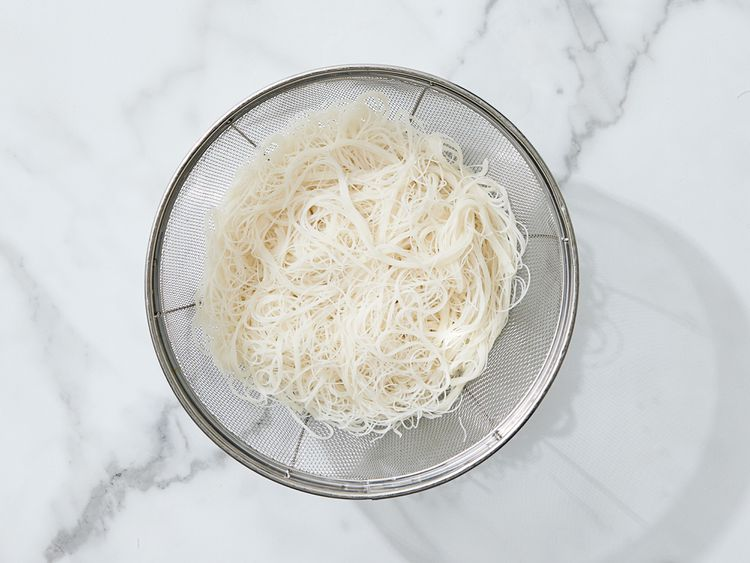

Pancit

Description
Pancit is a Filipino dish. There are many different types of pancit, but it always features rice noodles and
vegetables (and often meat, such as pork or chicken).
Pancit is traditionally made with vermicelli rice noodles. The great thing about rice noodles? You don't
have to boil them! Just soften them in water and you're good to go. If you don't have rice noodles on hand,
you can use udon or chow mein noodles.
Ingredients
Yields 6 servings
- 1 (12 ounce) package dried rice noodles
- 1 teaspoon vegetable oil
- 1 onion, finely diced
- 3 cloves garlic, minced
- 2 cups diced cooked chicken breast meat
- 1 small head cabbage, thinly sliced
- 4 carrot, thinly sliced
- 1/4 cup soy sauce
- 2 lemons- cut into wedges, for garnish
Directions
-
Gather all ingredients.
-
Place rice noodles in a large bowl; cover with warm water and let it soften for 8-10 minutes. Drain and
set aside.

-
Meanwhile, heat oil in a wok or large skillet over medium-low heat. Add onion and garlic; cook and stir
until onion is tender, about 3-5 minutes. Stir in chicken, cabbage, carrots, and soy sauce. Cook until
cabbage begins to soften.
-
Toss in noodles and cook, stirring constantly, until heated through.
-
Transfer pancit to a serving dish and garnish with lemon wedges.
Original recipe by Allrecipes